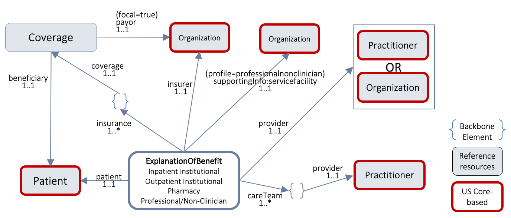

CARIN Consumer Directed Payer Data Exchange (CARIN IG for Blue Button®)
0.1.10 - STU1
CARIN Consumer Directed Payer Data Exchange (CARIN IG for Blue Button®)
0.1.10 - STU1
CARIN Consumer Directed Payer Data Exchange (CARIN IG for Blue Button®) - Local Development build (v0.1.10). See the Directory of published versions
The CARIN (Creating Access to Real-time Information Now through Consumer-Directed Exchange) Alliance is an HL7 FHIR Accelerator program which brings implementers together to advance the use of HL7 FHIR standards in health care. The CARIN Alliance Health Plan Workgroup was organized to develop a FHIR-based API that could be implemented by a consumer-facing application. The CARIN for Blue Button Framework was designed to answer the challenge for health plans to ‘meet or exceed’ the CMS Blue Button 2.0 capabilities. The CMS Blue Button® 2.0 project provides over 53 million Medicare fee-for-service beneficiaries access to their electronic claims information. The goal of the CARIN Alliance Health Plan Workgroup is to develop an agreed upon set of data fields to exchange with consumers and a FHIR-based implementation guide for health plans and consumer facing applications to use to implement the API. The CARIN health plan workgroup was organized to develop a FHIRâ€based API that could be implemented by a consumerâ€facing application.
Consumer-directed exchange occurs when a consumer or an individual authorized by a Payer to access another person’s information, invokes their HIPAA Individual Right of Access (45 CFR 164.524) and requests their digital health information from a HIPAA covered entity (CE) via an application or other third-party data steward.
Data from health plans is not currently available to a consumer through an open API framework and therefore is not accessible by third party applications authorized by the consumer. The Centers for Medicare & Medicaid Services (CMS) finalized on May 1st, 2020,its Interoperability and Patient Access Final Rule on patient access to health data. Under the final rule, Medicare Advantage (MA) plans, state Medicaid and Children’s Health Insurance Program (CHIP) agencies, Medicaid and CHIP managed care plans, and qualified health plan (QHP) issuers in the federally-facilitated exchanges (FFEs) must meet certain requirements regarding patient access to their health care information, including requirements related to application programming interfaces (APIs). CMS provides Implementation Guidance for the following data types that make-up the Patient Access API::
Patient Access API:
The Consumer Directed Payer Data Exchange Implementation Guide was defined by the CARIN Alliance to meet CMS requirements to provide Claims and Encounter data.
Provisioning Clinical Data is defined by the DaVinci Payer Data Exchange (PDex) and US Core Implementation Guides (see here).
Provisioning Plan Coverage and Formularies is defined by the DaVinci Payer Data Exchange US Drug Formulary Implementation Guide.
The effective date of the CMS Interoperability and Patient Access rule is January 1, 2021.
The CMS final rule states: “An MA organization must provide in an easily accessible location on its public website and through other appropriate mechanisms through which it ordinarily communicates with current and former enrollees seeking to access their health information held by the MA organization, educational resources in non-technical, simple and easy-to-understand language." Therefore, providing member educational materials is outside the scope of this IG and the responsibility of each payer.
The CMS rule also states, “Payers can look to industry best practices, including the CARIN Alliance’s Code of Conduct and the ONC Model Privacy Notice for other provisions to include in their attestation request that best meet the needs of their patient population." Although it’s outside the scope of the IG, CMS and the CARIN Alliance is encouraging payers to have applications sign the CARIN Code of Conduct as part of the application registration process or visit MyHealthApplication.com to view applications that have attested to the Code of Conduct to ensure there is consistency in how apps are getting informed, proactive consent from members and consistency in how apps use, share, and store a member’s health information. When the majority of data holders have applications sign the same set of best practices such as those found in the Code of Conduct, the FTC can enforce those best practices throughout the industry. The CARIN Alliance is also developing a set of Application Registration best practices for the industry to use. For more information, please visit the CARIN Alliance website.
The CMS Patient Privacy and Security resources directs that payers must educate patients about sharing their health information with third parties.
The effective date of the CMS rule is January 1, 2021. Patient education is out of scope for this Implementation Guide.
CARIN IG for Blue Button® uses the ExplanationOfBenefit Resource as its primary resource. Reference Resources are Coverage, Patient, Practitioner, PractitionerRole, Organization and Location. Since the ExplanationOfBenefit and Coverage profiles are not included in the US Core, there is no alignment requirement for these profiles. Patient, Practitioner, and Organization are US Core Profiles. Since these are supporting / reference profiles (rather than a focus profile) in CARIN IG for Blue Button®, the alignment with the US Core is on the content of these profiles, but not on the search parameters. The following diagram provides a high-level view of the relationships between resources used in this IG. It does not necessarily reflect all of the relationships/references between resources. 
The CARIN IG for Blue Button® requires the use of the SMART App Launch Framework’s standalone launch sequence as it will clarify that applications maintain a patient context for the duration of the connection. This authorization sequence also supports the ability for Payer Patient Access APIs to provide a patient selection widget that can be used to enable delegated access to member information. The SMART App IG also provides guidance on how to configure OAuth 2.0 servers to mediate access based on a set of rules configured to enforce institutional policy, which may include requesting end-user authorization. The SMART App IG also provides guidance on how to handle authentication.
The SMART App IG does not dictate the institutional policies that are implemented in the authorization server. Security mechanisms, such as those mandated by HIPAA in the US (end-user authentication, session time-out, security auditing, and accounting of disclosures) are outside the scope of this profile.
There are two parallel paths pursued by the CARIN Alliance and the Da Vinci Project related to providing health plan data to various stakeholders. CARIN Alliance approaches the issue primarily from a financial (claims) perspective, with some limited associated clinical data. Da Vinci Project approaches the issue primarily from a clinical perspective and leaves most financial data out of scope
The CARIN Alliance focused on replicating the CMS Blue Button 2.0 solution directed at providing beneficiaries access to claims information for Medicare Fee For Service (FFS) in the form of a FHIR based ExplanationOfBenefits (EOB). The CARIN Alliance Consumer-Directed Payer Data Exchange (CARIN IG for Blue Button®) solution was intended to provide the same information based on commercial payer databases, at a least for Medicare Advantage products. The CMS Interoperability and Patient Access Final Rule expanded the scope of a Blue Button 2.0 equivalent to include not just Medicare Advantage but also Medicaid HMO, CHIP HMO and QHP's in the federal marketplace.
The Da Vinci Payer Data Exchange (PDex) solution started with the goal of providing payer sourced information to providers in the form of FHIR resources consistent with US Core profiles for FHIR Release 4 (R4). The CMS Interoperability Final Rule directs covered payers (as noted above) to make encounter information and clinical data available to members through an API defined by the ONC 21st Century Cures Act Final Rule for, at a minimum, information defined in USCDI release 1.1. Since PDex was already focused on making the same information available through a compliant API, Da Vinci expanded the scope of PDex to include not only payer to provider exchange at the request of the provider but also payer to third party application exchange at the request of the member.
In addition, the CMS Interoperability Final Rule requires a covered plan, at the member’s request, to make their information (as defined by USCDI release 1.1, at a minimum) available to any other plan as directed by the member. This ability must exist for up to 5 years after the member leaves the plan. Da Vinci expanded the scope of the PDex Implementation Guide to support this exchange.
At this point we have two solutions that provide an overlapping but different set of information for the members of a health plan. The first is the CARIN IG for Blue Button® which is focused on providing claims information, including the adjudication information, in the form of a FHIR EOB. The second solution is to provide all payer information related to the clinical condition and care of the patient using US Core profiles on FHIR R4 resources. In the latter case, information coming from claims is represented as USCDI V1.1 information and includes, at a minimum: encounters, providers, organizations, locations, dates of service, diagnoses (conditions), procedures and observations. This information would also include clinical information from sources other than claims maintained by the payer, such as:
Unlike the US Core 3.1.0 Implementation Guide, PDex provides guidance to payers on how to make the following information available via the Patient Access API:
IG © 2020+ HL7 Financial Management Working Group. Package hl7.fhir.us.carin-bb#0.1.10 based on FHIR 4.0.1. Generated 2020-11-10
Links: Table of Contents |
QA Report
| Version History |
Search |
 |
Propose a change
|
Propose a change